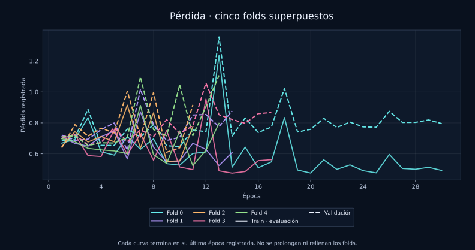
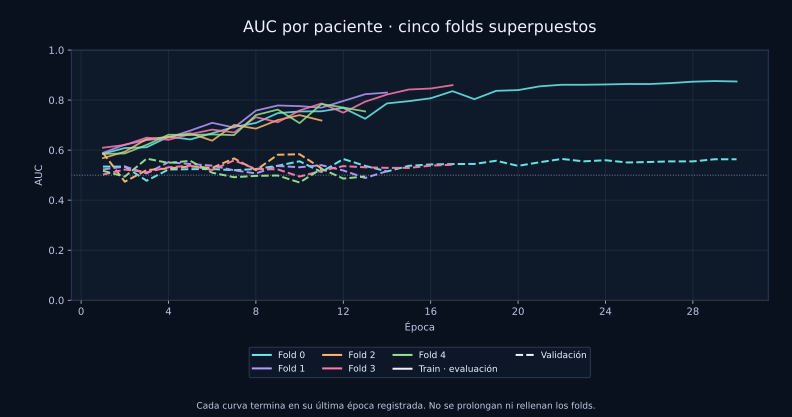
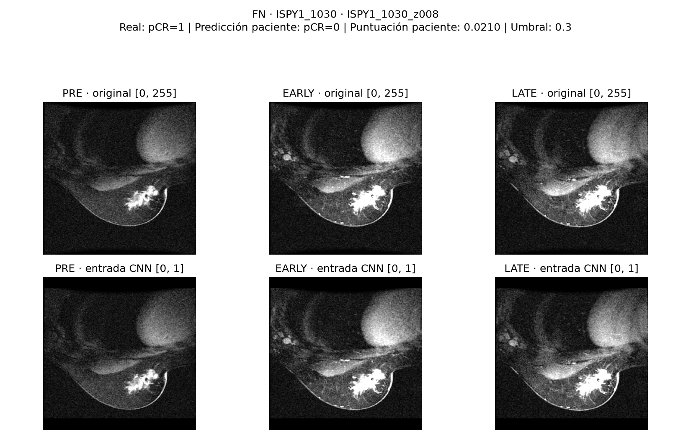
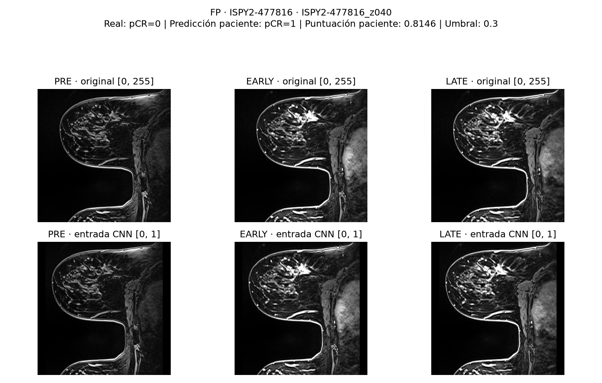

Resonancia pretratamiento
Tres fases DCE —PRE, EARLY y LATE— por corte, correspondientes a distintos momentos del contraste.
¿Podemos anticipar la respuesta al tratamiento a partir de una resonancia?
Diseñamos y entrenamos una CNN propia para explorar patrones de las imágenes anteriores al tratamiento asociados a la respuesta patológica completa.
Esquema ilustrativo · No muestra activaciones reales
El tratamiento neoadyuvante se administra antes de la cirugía. La tarea consiste en anticipar la respuesta posterior a partir de las imágenes previas. Todas las pacientes del caso tienen cáncer al inicio.
Tres fases DCE —PRE, EARLY y LATE— por corte, correspondientes a distintos momentos del contraste.
Tras el tratamiento no se encuentra cáncer invasivo residual según la definición del dataset.
No se cumple el criterio de respuesta completa. Puede haber respuesta parcial al tratamiento.
Proyecto educativo. No diagnostica ni recomienda tratamientos. Las puntuaciones no indican cuánto cáncer hay.
BreastDCEDL reúne imágenes de I-SPY1, I-SPY2 y Duke. La unidad de evaluación es la paciente: sus cortes se mantienen juntos en cada partición.
10.945 cortes para entrenamiento y validación. En el fold 1 original: 878 pacientes de train y 219 de validación.
1.758 cortes reservados para la evaluación del modelo de imágenes seleccionado.
322 pacientes con pCR=1 y 775 con pCR=0. La clase 0 es mayoritaria.
| Fase | Momento | Información visible |
|---|---|---|
| PRE | Antes del contraste. | Intensidad y estructura de referencia. |
| EARLY | Fase temprana posterior al contraste. | Cambios iniciales de intensidad. |
| LATE | Fase posterior a EARLY. | Evolución más tardía de la intensidad. |
El modelo seleccionado utiliza las tres fases como canales de entrada, en orden PRE, EARLY y LATE. No se interpretan como colores RGB. Las representaciones de realce se exploraron en otros experimentos.
Los cortes de una misma exploración comparten anatomía, adquisición y etiqueta. Repartirlos entre train y validación podría introducir una fuga de información. Por eso la división se realiza por identificador de paciente.
La CNN produce una puntuación por corte. Para la evaluación final se calcula la media de las puntuaciones de cada paciente y después se aplica el umbral. La matriz de confusión cuenta pacientes, no cortes.
| Paso | Operación | Propósito |
|---|---|---|
| Lectura | PNG PRE, EARLY y LATE del mismo corte. | Construir una entrada con las fases correspondientes. |
| ROI | Otsu y máscara común; componentes de al menos 64 píxeles. | Aproximar una región con tejido. No es una segmentación del tumor. |
| Recorte | Caja compartida por las fases y margen de 12 píxeles. | Reducir márgenes de fondo cuando los criterios de protección permiten recortar. |
| Tamaño | Redimensionado conservando proporción y padding hasta 256 × 256. | Mantener tamaño fijo sin deformar la proporción. El padding puede introducir fondo negro. |
| Intensidad | Escala común basada en el percentil 99,5 de valores positivos y salida limitada a [0, 1]. | Evitar escalas independientes para cada fase. No genera medidas físicas de contraste. |
| Tensor | 3 × 256 × 256, en orden PRE, EARLY y LATE. | Entrada de la CNN para cada corte. |
Registro espacial y CLAHE están desactivados. Un recorte común conserva el encuadre, pero no corrige automáticamente movimientos entre fases.
Se investigaron diferencias de intensidad en las pacientes ISPY1_1148 e ISPY1_1193. Los archivos comprobados coincidían con los de la fuente tanto en contenido como en píxeles. Su aspecto motivó una revisión, pero no demuestra por sí solo un error de adquisición.
Tres fases del mismo corte, mostradas sin invertir ni ajustar el contraste. Pulsa una imagen para abrir el PNG original.
En este ejemplo destaca el aspecto muy claro de la fase LATE.
En esta paciente se investigó una fase LATE de aspecto oscuro. La diferencia de brillo no permite concluir, por sí sola, que exista una anomalía.
Ambas pacientes permanecen en la validación del modelo final. La CNN seleccionada, cnn5_5pool_otsu_spatial_f1, conserva las 219 pacientes originales. En otros experimentos se excluyeron estas dos pacientes completas, con autorización docente, dejando 217 pacientes de validación. Esos experimentos no son el modelo final de esta aplicación.
Queda pendiente revisar el origen de estas diferencias. No se aplicaron inversiones de intensidad ni correcciones automáticas, y no se modificó retrospectivamente la validación del modelo final.
Cinco etapas convolucionales, entrenadas desde cero, transforman la entrada en características. La animación representa la estructura, no activaciones reales.
Canales: 16, 32, 64, 128 y 128. Cada etapa contiene convolución, BatchNorm, ReLU y MaxPooling.
Pondera posiciones en mapas de 32 × 32 antes del cuarto pooling. No garantiza localizar el tumor.
GAP resume los mapas en 128 características. La capa lineal produce un logit y la sigmoide una puntuación.
| Etapa | Canales | Resolución |
|---|---|---|
| Entrada | 3 | 256 × 256 |
| Etapa 1 | 16 | 128 × 128 |
| Etapa 2 | 32 | 64 × 64 |
| Etapa 3 | 64 | 32 × 32 |
| Etapa 4 | 128 | 16 × 16 |
| Etapa 5 | 128 | 8 × 8 |
| GAP | 128 | 1 × 1 |
| Linear | 1 logit | — |
lr 0,0003 · batch 128 · weight decay 0,0001 · dropout 0,3 · semilla 42.
Mejor AUC de validación por paciente. Máximo 30 épocas, paciencia 10. El entrenamiento terminó tras 22 épocas.
pos_weight ≈ 2,372, obtenido del desbalance de los cortes de entrenamiento.
Se exploraron pérdidas normales y ponderadas. En el modelo seleccionado, pos_weight aumenta la contribución del término positivo de la BCE. No fija el umbral ni garantiza un recall determinado.
Durante entrenamiento se aplican conjuntamente a las fases volteos horizontales con probabilidad del 50 %, rotaciones de hasta ±10° y desplazamientos de hasta ±8 píxeles. Validación, test y aplicación utilizan las imágenes sin aumentos.
Cada partición reserva pacientes distintas para validación. La comparación permite observar la variabilidad entre folds; no elimina por sí sola el sobreajuste.
| Fold | Época | AUC train | AUC validación |
|---|---|---|---|
| 0 | 22 | 0,861 | 0,565 |
| 1 | 4 | 0,650 | 0,552 |
| 2 | 1 | 0,568 | 0,589 |
| 3 | 7 | 0,671 | 0,559 |
| 4 | 3 | 0,621 | 0,566 |
AUC de validación: 0,566 ± 0,014. Media y desviación estándar entre checkpoints. No es un intervalo de confianza ni un resultado de test. Estos experimentos no son el checkpoint original de la época 12.


Generalizar significa aplicar lo aprendido a pacientes que no participaron en el entrenamiento. Para comprobarlo, comparamos el rendimiento en entrenamiento con el obtenido en validación.
| Conjunto | Qué pacientes contiene | AUC |
|---|---|---|
| Entrenamiento | Pacientes utilizadas para aprender los pesos. | 0,769 |
| Validación | Pacientes que no se utilizaron para aprender los pesos. | 0,556 |
¿Qué observamos? La CNN separa mejor las clases en las pacientes de entrenamiento que en las de validación. La diferencia de AUC es de 0,213, una señal de sobreajuste: parte de los patrones aprendidos no resulta útil en pacientes distintas.
Elegir la mejor época mediante early stopping limita cuánto seguimos entrenando, pero no garantiza que el modelo generalice bien. Por eso debemos revisar también las curvas y el rendimiento en los conjuntos reservados.
Antes de comparar dos curvas debemos comprobar que el error se ha calculado de la misma forma:
Que dos curvas de pérdida se crucen no marca por sí solo el inicio del sobreajuste. Importa su evolución, cómo se calcularon y la diferencia de rendimiento entre entrenamiento y validación.
| Puntuación de pCR=1 | Predicción |
|---|---|
| Menor que 0,3 | pCR=0 |
| Igual o mayor que 0,3 | pCR=1 |
Por ejemplo, 0,04 se clasifica como 0 y 0,40 como 1. Elevar el umbral exige una puntuación mayor para asignar un 1: reduce los positivos predichos y cambia la matriz de confusión, pero no el AUC.
Se mantuvo 0,3 al evaluar el test. Este valor es una decisión experimental, no una frontera biológica ni un umbral clínicamente validado.
CNN de imágenes cnn5_5pool_otsu_spatial_f1, ReLU, checkpoint de la época 12 y umbral 0,3. Resultados guardados de 176 pacientes; no corresponden a un ensemble.
IC del 95 %: 0,430–0,607. Calculado mediante 5.000 remuestreos bootstrap de las 176 pacientes.
Media del F1, dando el mismo peso a ambas clases.
Media del recall de pCR=0 y del recall de pCR=1.
| Clase | Precisión | Recall | F1 | Pacientes reales |
|---|---|---|---|---|
| pCR=0 | 0,678 | 0,496 | 0,573 | 123 |
| pCR=1 | 0,279 | 0,453 | 0,345 | 53 |
| Media macro | 0,478 | 0,474 | 0,459 | 176 |
Precisión: de los casos predichos de una clase, cuántos pertenecen realmente a ella. Recall: de los casos reales de una clase, cuántos encuentra. F1: media armónica entre precisión y recall.
62 falsos positivos: se predice respuesta completa, pero la etiqueta real es pCR=0. 29 falsos negativos: se predice respuesta no completa, pero la etiqueta real es pCR=1.
La clase 0 es más frecuente en el test. Responder siempre 0 acertaría muchos casos sin identificar a ninguna paciente de la clase 1.
| Qué medimos | Siempre pCR=0 | CNN |
|---|---|---|
| pCR=0 identificadas | 123 de 123 | 61 de 123 |
| pCR=1 identificadas | 0 de 53 | 24 de 53 |
| Aciertos totales | 123 de 176 · 69,9 % | 85 de 176 · 48,3 % |
| Exactitud balanceada | 50,0 % | 47,4 % |
La CNN encuentra algunos casos de ambas clases, pero con este umbral no supera esa regla en accuracy ni en exactitud balanceada. Esto muestra por qué debemos informar varias métricas y una referencia sencilla.
Interpretación: el rendimiento observado es limitado. La demostración reproduce el pipeline técnico, pero no demuestra utilidad clínica.
Comparamos un clasificador clínico con otro que añade las características de la CNN congelada. Son análisis exploratorios de validación, posteriores al test del modelo de imágenes.
| Variable | Significado | Evidencia en nuestro análisis |
|---|---|---|
| HR | Estado de los receptores hormonales del tumor: estrógeno y/o progesterona. Codificación del dataset: 0 negativo, 1 positivo. | Mayor descenso medio de AUC al permutarla en el análisis inicial con árboles. |
| HER2 | Estado del biomarcador HER2. Categoría binaria del dataset: 0 negativo, 1 positivo. | Aportó señal en el análisis inicial. Sus variables derivadas comparten información con las derivadas de HR. |
| Edad | Edad registrada de la paciente, en años. | Importancia pequeña e inestable en árboles, pero mejoró el AUC observado de la regresión logística clínica en validación. |
| Volumen | Valor tum_vol del dataset, conservando su escala. No se presupone que esté expresado en cm³. | Mostró señal en entrenamiento y se probó como medida adicional de tamaño. |
La selección inicial utilizó particiones internas de entrenamiento, con el fold externo reservado. La importancia por permutación mide cuánto empeora el clasificador al mezclar los valores de una variable; no demuestra causalidad.
No se incluyó menopausia en la combinación seleccionada: tenía 104 valores ausentes en entrenamiento y no mostró una aportación consistente. Las variables correlacionadas pueden repartirse la importancia, por lo que una importancia pequeña no demuestra ausencia de información.
Significado de los biomarcadores: National Cancer Institute.
| Variables clínicas | Solo clínica | CNN + clínica |
|---|---|---|
| HR + HER2 | 0,646 | 0,598 |
| HR + HER2 + edad | 0,697 | 0,612 |
| HR + HER2 + edad + volumen | 0,715 | 0,613 |
Se promedian las 128 características de los cortes de cada paciente y se concatenan con los datos clínicos. Un clasificador por paciente produce la puntuación final. No es una combinación de las predicciones de cinco folds.
En estas comparaciones, la clínica sola obtuvo mayor AUC de validación que su combinación con la CNN. El combinado con volumen alcanzó 0,871 en entrenamiento frente a 0,613 en validación, mostrando una brecha importante.
El volumen debe conservar su escala y su comparabilidad entre cohortes sigue pendiente de aclarar. Todas las entradas deben estar disponibles antes del tratamiento. La CNN de imágenes sigue siendo el modelo principal.
Ya sabemos cómo se comportó el modelo en las pacientes evaluadas. Sin embargo, una cifra global no explica todos sus errores ni garantiza que funcione igual con otras pacientes. Estos son los análisis pendientes y las limitaciones del proyecto.
El AUC de test de 0,518 se calculó con 176 pacientes concretas. Si evaluáramos a otro grupo, probablemente obtendríamos una cifra diferente.
Qué falta: calcular un intervalo de confianza que exprese la incertidumbre de esa estimación. No debemos presentar el AUC como un valor exacto que se cumplirá en cualquier población.
Cómo lo estudiaríamos: crear muchas muestras a partir de las pacientes del test, seleccionándolas con reemplazo, y recalcular el AUC. Este procedimiento se llama bootstrap. Se utilizarían las predicciones ya guardadas, sin volver a ejecutar la CNN.
El remuestreo debe hacerse por paciente, no por corte, porque los cortes de una misma paciente están relacionados.
No observamos el mismo rendimiento en todas las procedencias. Al separar las 176 pacientes del test, aparecen diferencias que el resultado global no muestra. Se mantiene el umbral 0,3 en los tres grupos.
| Cohorte | Pacientes | pCR=0 / pCR=1 | AUC | Recall pCR=0 | Recall pCR=1 | F1 macro |
|---|---|---|---|---|---|---|
| Duke | 42 | 33 / 9 | 0,727 | 69,7 % | 55,6 % | 0,592 |
| I-SPY1 | 35 | 23 / 12 | 0,344 | 65,2 % | 0,0 % | 0,300 |
| I-SPY2 | 99 | 67 / 32 | 0,483 | 34,3 % | 59,4 % | 0,423 |
Duke presenta la mayor discriminación observada: se identifican 23 de 33 pacientes pCR=0 y 5 de 9 pCR=1. Sin embargo, solo contiene nueve casos positivos, por lo que la estimación tiene una incertidumbre importante.
En I-SPY1 no se identifica ningún pCR=1: las 12 pacientes de esa clase se clasifican como pCR=0. Su AUC inferior a 0,5 indica que la ordenación observada de las puntuaciones es desfavorable en este grupo.
I-SPY2 es el grupo más numeroso: contiene 99 pacientes y su AUC está próximo a 0,5. Identifica 19 de 32 positivos, pero también clasifica incorrectamente como positivos a 44 de 67 negativos.
Son comparaciones descriptivas con grupos pequeños y desiguales. Faltan intervalos de confianza por cohorte. Las diferencias no demuestran su causa ni justifican invertir las puntuaciones o ajustar umbrales usando este test.
El análisis de test muestra discrepancias entre las puntuaciones y la proporción real de respuesta completa. Por eso seguimos presentándolas como puntuaciones no calibradas.
Agrupamos las pacientes en cinco intervalos y comparamos la puntuación media con el porcentaje que realmente alcanzó pCR=1.
| Intervalo de puntuación | Pacientes | Puntuación media | pCR=1 observado |
|---|---|---|---|
| 0 a menos de 0,2 | 62 | 11,2 % | 30,6 % |
| 0,2 a menos de 0,4 | 55 | 29,9 % | 29,1 % |
| 0,4 a menos de 0,6 | 42 | 48,9 % | 35,7 % |
| 0,6 a menos de 0,8 | 16 | 68,4 % | 18,8 % |
| 0,8 a 1 | 1 | 81,5 % | 0,0 % |
Ejemplo: las 16 pacientes del intervalo 0,6–0,8 recibieron una puntuación media del 68,4 %, pero solo tres alcanzaron respuesta completa. En este grupo, el modelo sobreestima la frecuencia observada.
En el intervalo más bajo ocurre lo contrario: la puntuación media es del 11,2 %, pero la respuesta completa se observa en el 30,6 % de las pacientes. Una puntuación baja tampoco permite descartar esa respuesta.
El Brier score global es 0,247. Mide el error cuadrático medio entre las puntuaciones y las etiquetas reales: cuanto menor, mejor. Depende tanto de la calibración como de otros aspectos del rendimiento, por lo que no debe interpretarse aisladamente.
El último intervalo contiene una sola paciente y no permite extraer conclusiones firmes. Las proporciones de los grupos pequeños son inestables. Este análisis describe la calibración; no se ha ajustado ningún calibrador ni modificado el modelo.
La CNN analiza cada corte por separado. Después promediamos sus puntuaciones para obtener el resultado por paciente.
Por tanto, el modelo no estudia directamente cómo se conectan las estructuras entre cortes ni la forma tridimensional completa del tumor. Además, al promediar, un corte especialmente informativo puede quedar diluido entre los demás.
Esto es una limitación de la representación utilizada, no una demostración de que un modelo 3D vaya a mejorar. Cualquier alternativa tendría que entrenarse y evaluarse con un procedimiento comparable.
Revisamos ejemplos en los que la predicción del modelo no coincide con la etiqueta real. Comparamos las tres fases originales —PRE, EARLY y LATE— con las imágenes obtenidas después del preprocesado que utiliza la CNN.
El objetivo es comprobar si existen alteraciones visibles relacionadas con el recorte, las intensidades o la correspondencia entre fases. Esta revisión puede sugerir aspectos que investigar, pero no permite determinar por sí sola por qué se equivocó la red.
La etiqueta real de esta paciente era pCR=1: alcanzó respuesta patológica completa. Sin embargo, el modelo obtuvo una puntuación media de 0,0210. Al estar por debajo del umbral de 0,3, predijo pCR=0.

Qué observamos: en los cortes z004 y z008 revisados, las estructuras principales visibles se conservan después del preprocesado. No se aprecia un recorte que elimine de forma evidente la zona brillante. Las zonas de mayor intensidad ya están presentes en los originales.
Qué podemos concluir: en estos cortes no hemos identificado una alteración evidente del preprocesado que explique el falso negativo. Esto no demuestra que todo el estudio esté libre de problemas ni permite identificar la causa del error.
La etiqueta real de esta paciente era pCR=0: no alcanzó respuesta patológica completa. El modelo obtuvo una puntuación media de 0,8146. Al superar el umbral de 0,3, predijo pCR=1.

Qué observamos: las imágenes originales y las preprocesadas mantienen un aspecto parecido. No se aprecia una pérdida evidente de las estructuras visibles por el recorte. Las zonas brillantes de EARLY y LATE ya aparecen en las imágenes originales.
Qué podemos concluir: este ejemplo muestra que una puntuación elevada también puede acompañar a una predicción incorrecta. El valor 0,8146 no debe interpretarse como una probabilidad clínica fiable del 81,46 %. La figura tampoco permite saber qué regiones utilizó la CNN para tomar su decisión.
Resultado de esta revisión: hemos documentado un falso negativo y un falso positivo. En las imágenes examinadas no hemos encontrado una causa visual concluyente que explique los fallos. Una apariencia razonable de las entradas no garantiza una predicción correcta.
Las puntuaciones mostradas son la media de las puntuaciones de los cortes de cada paciente. No son las puntuaciones individuales de los cortes ilustrados. Las figuras muestran únicamente algunos cortes del estudio.
Son ejemplos seleccionados por sus puntuaciones extremas entre los errores, no una muestra representativa de todos los casos. La revisión utiliza predicciones de test ya guardadas: no se ha repetido la inferencia, modificado el umbral ni excluido pacientes como consecuencia de estos fallos. Pulsa una figura para verla a tamaño completo.
Probamos distintas arquitecturas e hiperparámetros y comparamos sus resultados en validación. Si elegimos repetidamente la alternativa que mejor funciona en el mismo grupo, podemos terminar adaptando nuestras decisiones a las particularidades de esas pacientes.
Esto puede hacer que el resultado de validación parezca mejor de lo que después observamos con pacientes nuevas. La validación cruzada permite estudiar la variabilidad entre particiones, pero no elimina automáticamente este efecto de selección.
Cómo debemos interpretarlo: el test debe evaluar decisiones fijadas previamente. Una vez conocido su resultado, los experimentos posteriores se consideran exploratorios. No podemos usar ese test para escoger cambios y presentarlo después como una nueva prueba independiente.
Los datos clínicos pueden aportar información complementaria a las imágenes, pero añadir más variables no garantiza una mejor predicción. En nuestros experimentos, la combinación de imágenes y clínica no superó al modelo que utilizaba únicamente las variables clínicas.
El modelo clínico utilizó HR, HER2, edad y volumen tumoral. El modelo combinado añadió esas mismas variables a la media de las 128 características extraídas por la CNN para cada paciente. La CNN se mantuvo congelada: sus pesos no se volvieron a entrenar.
| Modelo | Entrenamiento · 878 pacientes | Validación · 219 pacientes |
|---|---|---|
| Solo datos clínicos | 0,720 | 0,715 |
| CNN + datos clínicos | 0,871 | 0,613 |
El modelo clínico obtuvo resultados parecidos en entrenamiento y validación. En cambio, el combinado funcionó mucho mejor con las pacientes utilizadas para ajustarlo que con las pacientes de validación. Esa diferencia es compatible con sobreajuste: parte de lo aprendido no se trasladó a pacientes distintas.
Las características de la CNN procedían de una red entrenada con esas mismas pacientes de entrenamiento. Por tanto, el clasificador combinado podía aprovechar patrones que la CNN ya había aprendido específicamente de ellas. Introducir 128 características de imagen también aumentó el número de entradas respecto al modelo clínico. Son posibles explicaciones de la brecha observada, pero estos resultados no permiten identificar una causa única.
Con esta forma de combinar los datos, no hemos demostrado que la imagen aporte una mejora sobre la clínica. Esto no significa que las imágenes carezcan de información útil: significa que nuestra arquitectura y nuestro método de combinación no consiguieron aprovecharla mejor en esta validación.
El modelo exclusivamente clínico alcanzó un AUC de validación de 0,715. Sin embargo, con el umbral de 0,3 identificó 58 de las 62 pacientes con pCR=1, pero solo 40 de las 157 pacientes con pCR=0. Por tanto, tendía a predecir respuesta completa con mucha frecuencia.
El AUC resume cómo ordena el modelo a las pacientes a lo largo de distintos umbrales. La matriz de confusión describe qué sucede con el umbral concreto elegido. Necesitamos ambas perspectivas para valorar el resultado.
Antes de utilizarlas, habría que confirmar que están disponibles en el momento de realizar la predicción y que se obtuvieron antes del tratamiento. También debemos conocer cómo se registraron, qué significan sus valores y cómo se gestionan los datos ausentes.
En particular, queda por aclarar si el volumen tumoral tiene la misma definición, unidad y método de cálculo en todas las cohortes. No basta con que las columnas compartan un nombre para asumir que sus valores son directamente comparables.
Los datos clínicos mostraron capacidad predictiva en la validación analizada, mientras que añadir las características de esta CNN no mejoró su AUC. La combinación requiere más estudio para reducir el sobreajuste y comprobar su aportación.
Estos experimentos se realizaron después de consultar el test del modelo de imagen y son exploratorios. Sus resultados corresponden a validación, no a un test independiente del modelo combinado. La CNN de imagen sigue siendo el modelo principal del trabajo.
Conclusión: hemos construido una aplicación que reproduce el pipeline del modelo, pero su rendimiento predictivo es limitado. Los análisis pendientes ayudarían a comprender mejor sus errores y su incertidumbre; no garantizan mejorarlo. El proyecto no permite tomar decisiones clínicas.
Dataset BreastDCEDL, enunciado y apuntes de la asignatura, configuraciones y registros de los experimentos. Autora: Claudia Lozano Pérez.
Selecciona un ejemplo o carga PRE, EARLY y LATE de la misma paciente y del mismo corte. Se esperan PNG grises de 8 bits, 256 × 256, con un máximo de 2 MB por archivo.
Ejemplos de entrenamiento incluidos en la web. También puedes cargar tus propias imágenes compatibles.
Se descarga el motor ONNX Runtime y se comprueban seis referencias de Python antes de habilitar el análisis.
Iniciando interfaz…
Si los nombres no permiten detectar los identificadores, introdúcelos manualmente. Comprueba la correspondencia de las tres fases antes de analizar.
Pulsa «Conectar CNN» antes de analizar.
Añade otros cortes de la misma paciente. Repetir un identificador reemplaza ese corte. «Limpiar estudio» retira las imágenes del visor; «Vaciar paciente» elimina los cortes acumulados.
| Corte | Puntuación pCR=1 | Acción |
|---|
Todavía no has añadido cortes.
Uso educativo. El resultado solo utiliza los cortes aportados. No es una recomendación clínica ni una medida del porcentaje de cáncer.
Introduce datos correspondientes a la misma paciente. La explicación de las variables y del clasificador está en Comparación clínica.
Los valores desconocidos se imputan con las medianas de entrenamiento y sus indicadores de ausencia. No introduzcas volumen en una escala distinta a la del dataset.
Conecta la CNN y añade los cortes de una paciente.
Comparación todavía no calculada.
El visor muestra fases y diferencias de intensidad. No es una segmentación ni una explicación de la predicción.
Carga las fases para comparar sus intensidades.
Azul: diferencia negativa · Rojo: diferencia positiva.
Carga las tres fases para comenzar.
Diferencias en unidades de intensidad PNG. No equivalen a concentraciones físicas de contraste.